更多颜色
回忆上节课内容🤔
- 我们上次深入了配色方案
- 定义了自己的配色方案
oeasy - 建立了自己的配色
oeasy - 在状态栏应用了自己的配色

明确能用的颜色
- 先胡乱地尝试一下修改颜色代码
hi Normal ctermfg=1hi Normal ctermfg=2-
hi Normal ctermfg=3 -
首先看看有多少能用的颜色
-
:set t_Co? -
设置为 256 色的有颜色终端（cterm）显示模式
-
:set t_Co=256 -
那么这 256 种颜色都有什么呢？
- 我们尝试把他显示出来
显示某种颜色
- 显示某种颜色
echo -e "\033[48;5;1moeasy[0m"
echo -e "\033[48;5;2moeasy[0m"
echo -e "\033[48;5;3moeasy[0m"
echo -e "\033[48;5;4moeasy[0m"
echo -e "\033[48;5;5moeasy[0m"
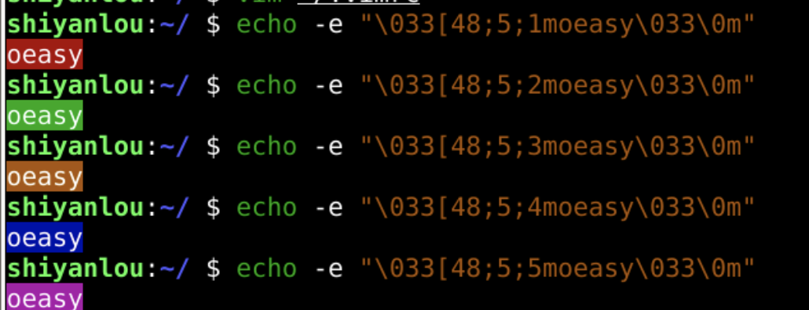
尝试把所有颜色遍历出来
#!/bin/bash
for c in {0..255}
do
printf "\033[48;5;"$c"m%5d\033[0m" $c
done
- 保存并运行当前程序
:w|!sh %
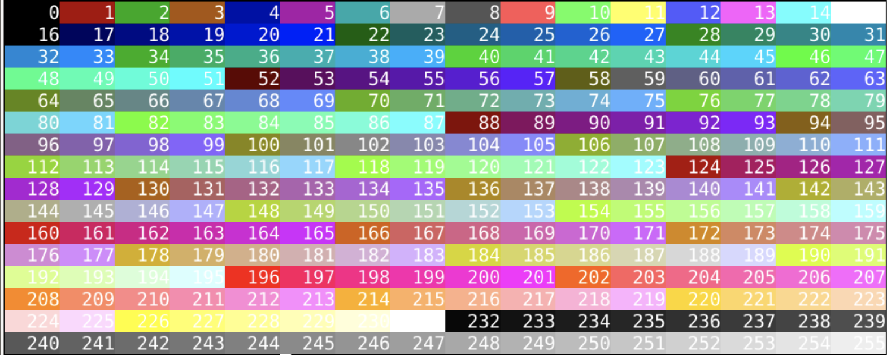
- 确实符合ansi的规则
- 这不废话么？🤪
修改确认
:hi Normal ctermbg=196:hi Normal ctermbg=214:hi Normal ctermbg=124- 经过确认颜色基本能够对应上
- 这样我们就可以使用全部256种颜色了
- 哈哈哈哈
- 开心😁
更多颜色
- 当我打开了下载的color文件
- 就是上上次从vimcolors.com下载的
- git clone https://github.com/gryf/wombat256grf.git
- 发现了这个
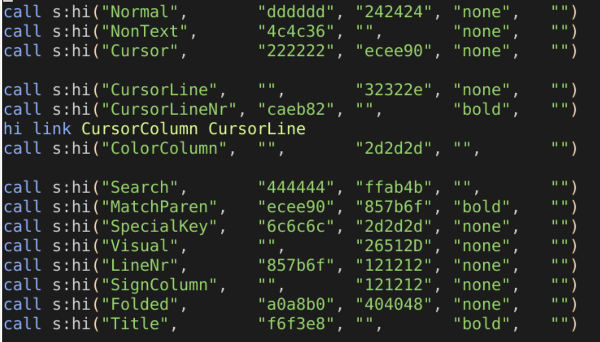
- 看起来我们可以使用rgb颜色编码方式！！
- 怎么做的呢？看代码
转化过程
- 需要在代码里定义从rgb颜色模式到ansi颜色模式的转化函数
- 首先把rgb拆分为三个本地的分量
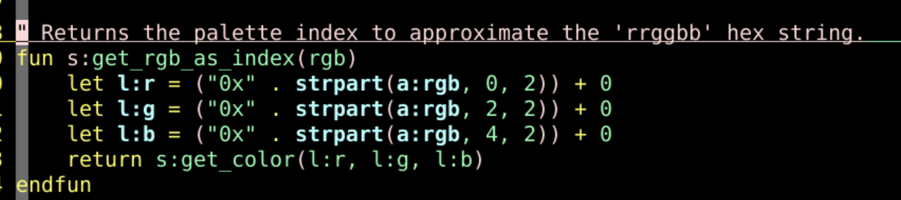
- 得到三个分量近似的灰阶值
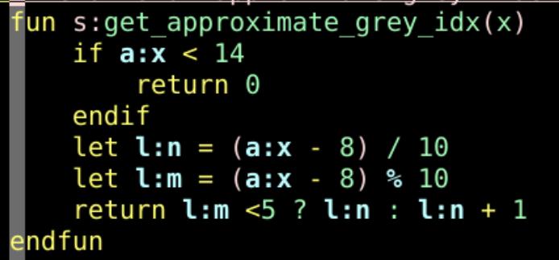
- 如果三个分量相等
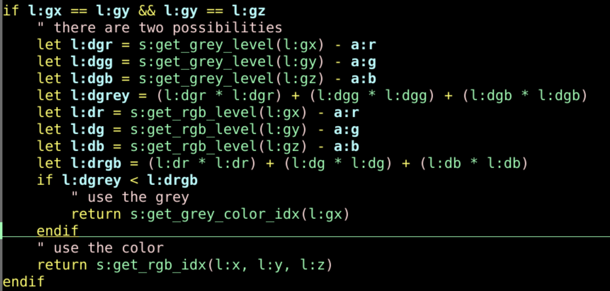
- 映射到相应具体的灰阶的值
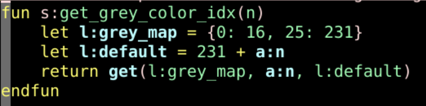
- 彩色怎么办呢？
彩色映射
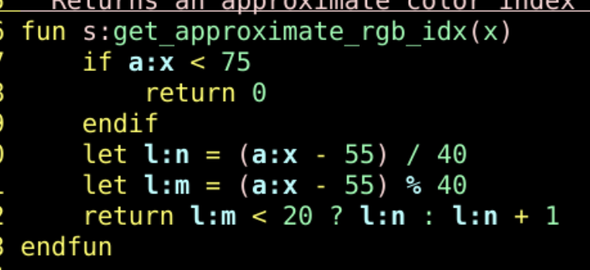
- rgb三个分量已经得到了
- 得到近似颜色
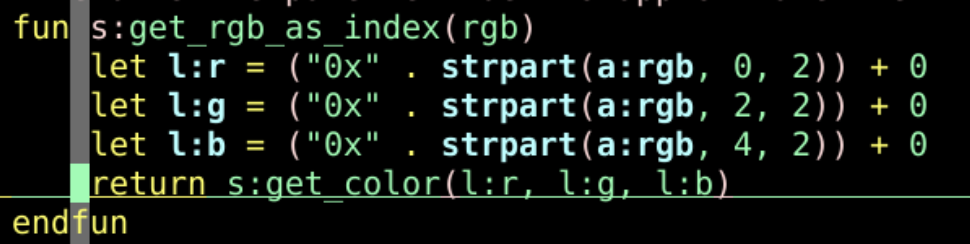
- 然后再得到彩色的值
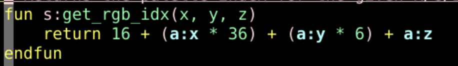
- 这样我们就可以使用rgb颜色了
- 而且不论我们使不使用颜色映射
- 都可以用代码当前的配色方案直接生成颜色网页
生成网页
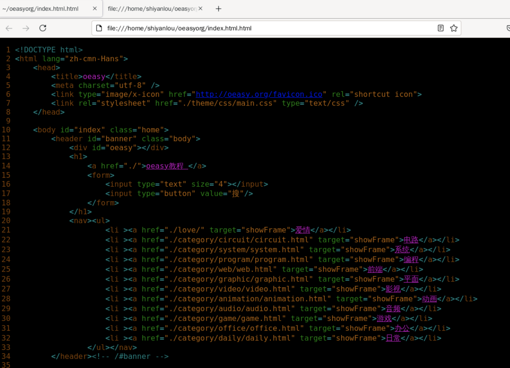
- 可以用自定义的颜色方案生成网页
:TOhtml- 或者
:source $VIMRUNTIME/syntax/2html.vim - 然后在浏览器里打开他
:firefox %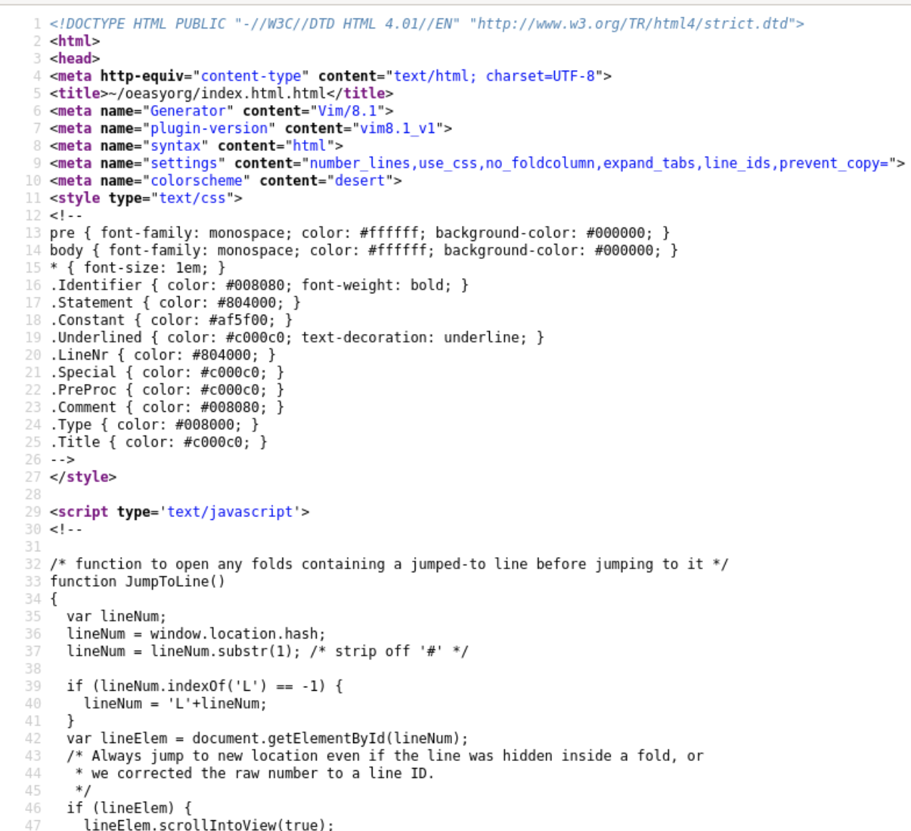
总结
- 这次了解了颜色的细节
- 设置 256 色模式
:set t_Co=256- 然后确定了具体的各种颜色
- 还可以生成网页
- 还有什么好玩的么？🤔
- 下次再说 👋